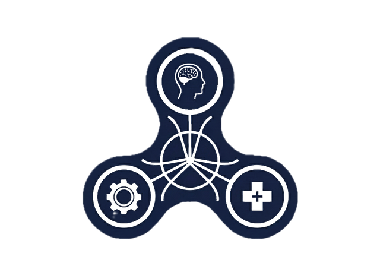
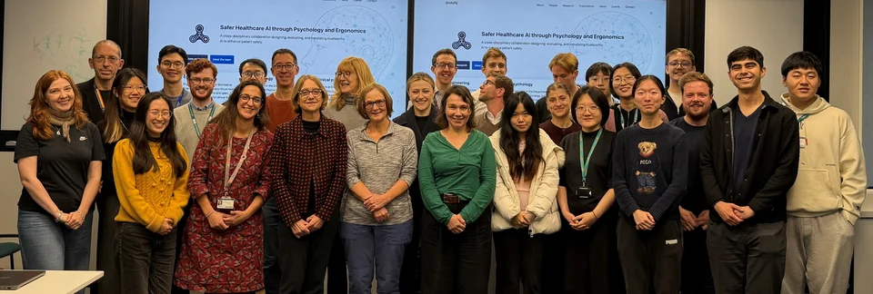

Safer Healthcare AI through Psychology and Ergonomics
A cross-disciplinary collaboration at the University of Oxford designing, evaluating, and translating trustworthy AI to enhance patient safety.
01 · Biomedical Engineering
Engineering
Engineers at the Institute of Biomedical Engineering, led by Professor Alison Noble, develop robust algorithms and open, reproducible workflows for clinical AI.
02 · Experimental Psychology
Psychology
Researchers in the Department of Experimental Psychology, led by Professor Nick Yeung, study how clinicians use AI tools in decision-making and how to support effective human–AI teaming.
03 · Clinical Simulation
Clinical practice
Clinicians at OxSTaR, led by Professor Helen Higham, focus on human factors and simulation-based training to evaluate AI-enabled pathways and improve safety in real clinical settings.
Latest workshop · 23 October 2026
6th Human–AI for Clinical Decision-Making Workshop
Our hybrid autumn workshop at the Institute of Biomedical Engineering brought together the collaboration for project updates across SimSight, AI as a Clinical Instructor, Experimental Psychology, and Learning to Defer, alongside roadmap planning for 2026.

Recent publications
All publications →npj Digital Medicine · Oct 2026 · Original research
An examiner-conditioned AI second marker for VR OSCEs
Meet RAVEN: an AI second marker combining first-person VR video, action logs, and examiner assessments to support human review of borderline clinical exam decisions.
npj Digital Medicine · Jun 2026 · Scoping review
Human–AI Collaboration in Healthcare: A Scoping Review
Synthesising 140 empirical studies to map how human–AI collaboration is evaluated across clinical tasks, what drives effective teaming, and where safety evidence is needed.
Research themes
- Trustworthy and transparent AI
- Human factors and clinical simulation
- Decision support and workflow integration
- Evaluation frameworks and safety metrics